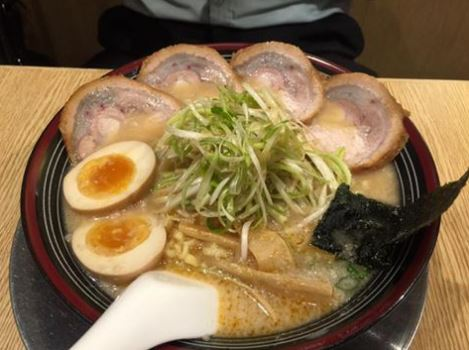
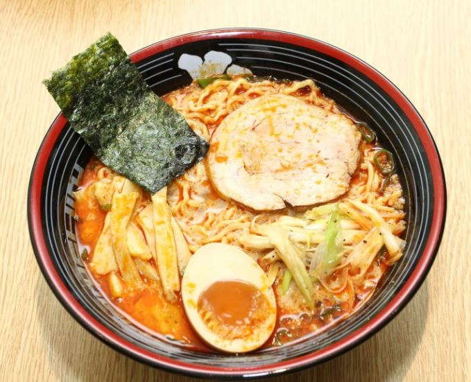
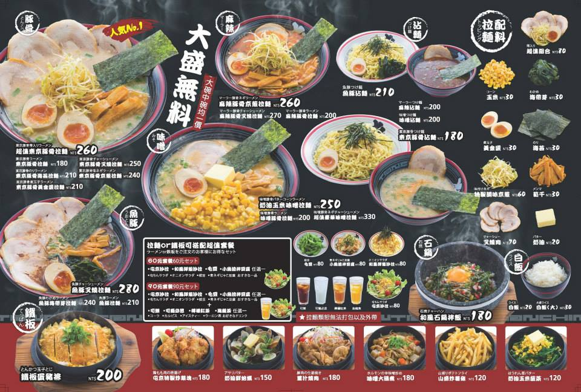

跟大家推薦好吃的拉麵，有拜訪過台北車站、東區的分店，環境都不錯，都有舒適的坐位!
↑這是他們的招牌拉麵，超值東京豚骨拉麵，有附四片叉燒肉，真的很超值呢!
↑喜歡吃辣的朋友，不防試試看麻辣豚骨拉麵，也很美味！湯頭麻辣的味道很提味。
對了，屯京拉麵的湯頭偏鹹喔，所以在點餐時，也有提供較淡的湯頭的選擇。
而他們小碗大碗都是同一個價格，食量大的朋友可以點大碗，很有飽足感很划算~
最後推薦屯京拉麵的小菜-屯京特製炸雞塊，鮮嫩多汁，兩~三個人分食剛剛好。
這是菜單可以參考~也有附店家網址可以進去看看詳細資訊喔! 圖片來源：屯京拉麵網址